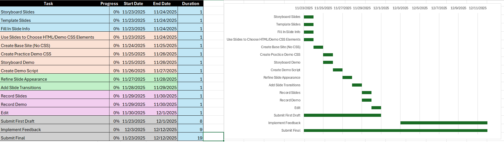

Final Project Objectives & Scope
Project Requirements:
The final project is a comprehensive five minute (minimum)
recorded multimedia presentation explaining and demonstrating mastery of course concepts.
Presentations must be posted to YouTube, and high-quality presentations will be added to the course
wiki learning guide for future semesters.
You may select any topic you like from the course. It is not necessary for you to
personally appear or speak in your presentation, but presentations must include both visual
aspect(s) (PowerPoint slides, drawings, PowToon, screen capture, and/or other) and audio aspect(s)
(spoken presentation, text to speech, etc.).
Goal:
My goal with this final project is to create a video that demonstrates what was taught in Unit 10, CSS. It would be a basic introduction to the topic, covering:
- The differences between inline, internal, and external CSS
- The basic format of a CSS declaration
- Vocabulary such as selectors, properties, values, and declarations
- Types of selectors
- Common properties such as font, color, border, margins, padding, height, width, etc.
Deliverables:
- PowerPoint slide covering the aforementioned topics in a text/image-based format
- Screen capture demonstrations/walkthroughs of the topics on VS Code
- A voiceover dictating the onscreen explanations
Gantt Chart

Summary Paragraph
Regardless of what field someone is working in, the idea of a project and its management is inescapable. Because of this, knowing the terminology and standard practice when dealing with such undertakings is important. Similarly, knowing the common falacies may also be valuable information to be aware of. No matter what work we do, it is vital to know how to create an outline to visualize what needs to be done, form a plan to organize the individual steps, and manage what work has been or still needs to be completed. This unit discussed the aforementioned topics, serving as a great preparation for present and future projects. Especially with finals coming up, this knowledge is very valuable.